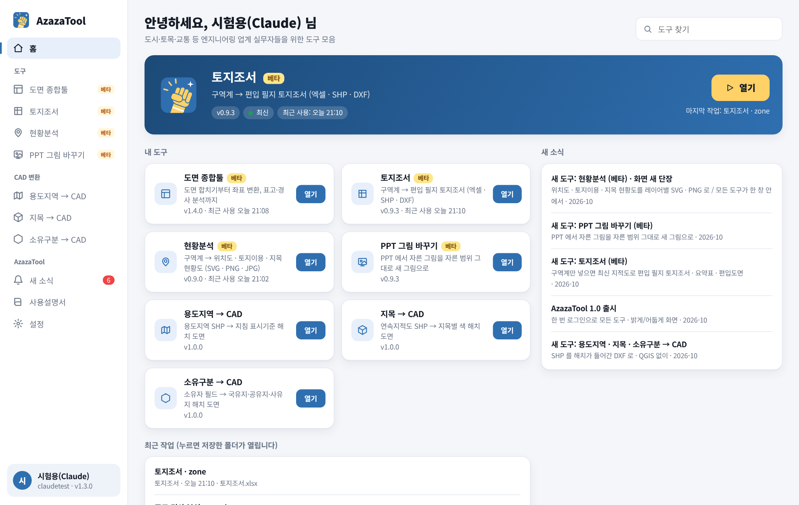
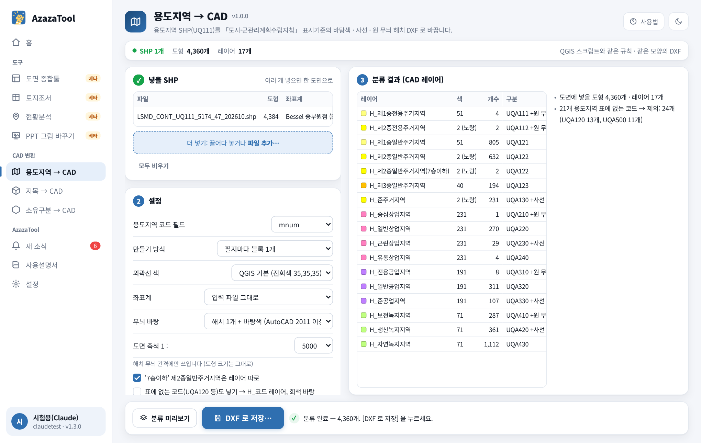
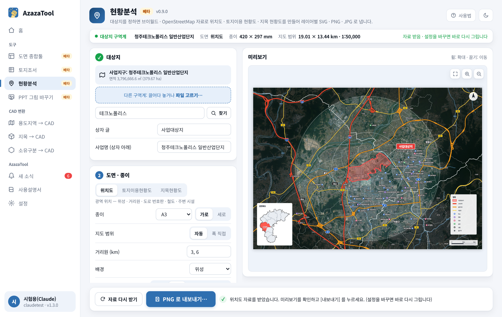

도시·토목·교통 실무에서 매번 손으로 하던 도면 작업을 한 번에. 한 번 로그인으로 모든 도구를 쓰고, 새 도구와 업데이트는 자동으로 받습니다.
최신 버전 다운로드
모든 도구가 같은 화면 틀로 열립니다. 한 화면에 기능이 다 보이고, 파일은 끌어 놓으면 됩니다. 작업 중에 다른 도구로 가도 계속 돌아갑니다.
수치지형도 도엽(DXF·DWG)을 한 장으로 합치고, 좌표계를 바꾸고, 표고·경사를 분석합니다.
구역계만 넣으면 최신 지적도를 받아 잘라 내고, 편입 필지의 지목 · 공부상 면적 · 소유구분 · 개별공시지가로 토지조서를 만듭니다.
파워포인트에서 필요한 부분만 잘라 둔 그림을, 자른 범위 · 위치 · 효과는 그대로 두고 새로 내보낸 그림으로 바꿉니다.
구역계만 고르면 위치도 · 토지이용 현황도 · 지목 현황도를 만듭니다. 일러스트레이터에서 바로 고칠 수 있게 묶음 · 레이어가 정리되어 나옵니다.
용도지역 SHP(UQ111)를 「도시·군관리계획수립지침」 도면 표시기준(1/5,000)에 맞춘 해치 도면으로 바꿉니다.
연속지적도 SHP 의 지목 부호로 28개 지목을 나눠, 지목별 색 해치 도면으로 바꿉니다.
소유자 값을 국유지 · 공유지 · 사유지로 나눠 색 해치 도면으로 바꿉니다.
설치는 필요 없습니다. 처음 한 번 회원가입만 하면 됩니다.
위의 최신 버전 다운로드를 누르면 항상 최신 버전이 받아집니다.
압축 파일을 오른쪽 클릭 → 모두 압축 풀기 한 뒤, 폴더 안의 AzazaTool.exe 를 실행합니다. “PC 보호” 화면이 나오면 추가 정보 → 실행.
이름 · 업계 · 아이디 · 비밀번호로 가입합니다. 허가되면 이후로는 자동으로 로그인됩니다.


네. 회원가입만 하면 무료로 쓸 수 있습니다.
한 계정으로 PC 2대까지 쓸 수 있습니다 (예: 회사 PC + 노트북). 3번째 PC 에서 로그인하면 가장 오래 안 쓴 PC 가 로그아웃됩니다. 인터넷이 없어도 마지막 확인 뒤 14일까지 쓸 수 있습니다.
따로 할 필요가 없습니다. AzazaTool 을 켤 때 새 버전을 확인해 받아 두고, 닫을 때 바꿉니다. 이 페이지의 다운로드 버튼도 항상 최신 버전을 받습니다.
켜면 자동으로 AzazaTool 로 업데이트됩니다. 쓰던 바로가기(DrawingTool.exe)를 눌러도 AzazaTool 이 열립니다. 로그인 정보도 그대로입니다.
PC 에 AutoCAD(LT 제외) 등 정품이나 무료 ODA File Converter 가 있으면 DWG 를 읽고 쓸 수 있습니다. 없으면 DXF 로 작업합니다.
첫 화면은 윈도우에 들어 있는 Microsoft Edge WebView2 로 그립니다. 이게 없는 PC 에서는 자동으로 간단한 화면으로 열리고, 기능은 같습니다.